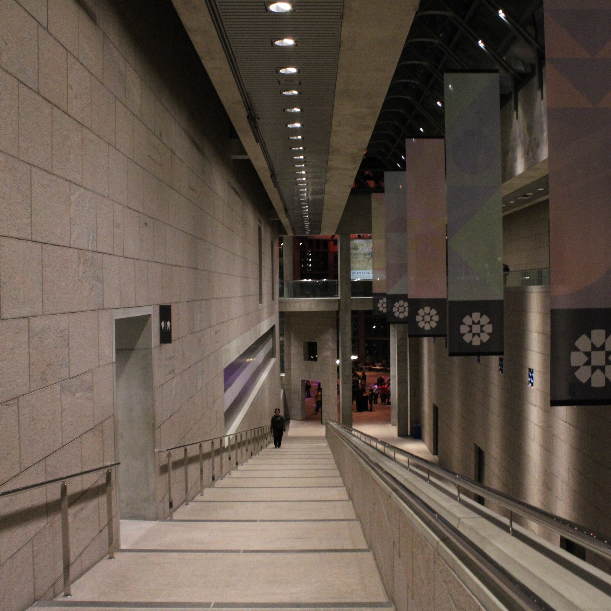

Exhibitions and Galleries

The National Gallery of Canada, located in downtown Ottawa, is one of the country's most important cultural institutions and a major destination for art lovers. The gallery houses an extensive collection of Canadian, Indigenous, European, and international artworks, representing different historical periods, artistic movements, and cultural perspectives. Visitors can explore a variety of exhibitions featuring traditional paintings, sculptures, photography, contemporary installations, and experimental forms of artistic expression. The museum also organizes temporary exhibitions that highlight the work of emerging and established artists, encouraging visitors to discover new ideas and interpretations of art. One of its most recognizable attractions is Maman, a monumental spider sculpture created by artist Louise Bourgeois, displayed outside the building. The gallery's architecture is also remarkable, featuring large glass windows, natural lighting, and spacious exhibition rooms that create an inspiring environment for appreciating art.